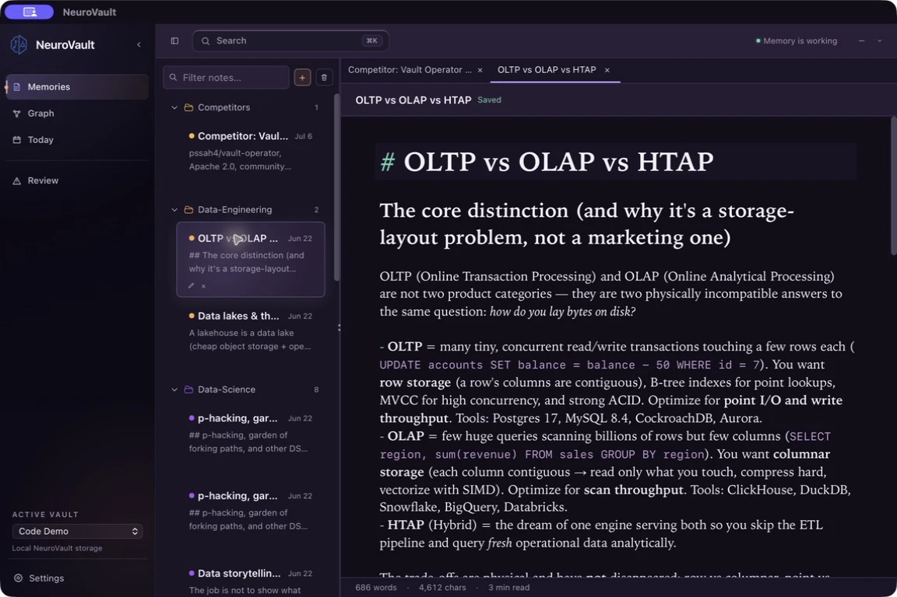

01 / Memories
Readable memory, not a black box.
Browse local Markdown, organize separate vaults, and edit what your agents are allowed to remember.
NeuroVault builds a durable memory base on your computer, then brings back the right context when your work needs it. Automatic for Claude Code. Available to any MCP-compatible agent.
Use the complete Mac app, or clone the same open source engine and configure it around your own agents.
$ git clone https://github.com/sirdath/NeuroVault.git
$ cd NeuroVault && node scripts/build-headless.mjs
FIG. 1. HYBRID RETRIEVAL, BENCHMARKED IN THE OPEN. SEMANTIC (SQLITE-VEC) + BM25 + KNOWLEDGE GRAPH, FUSED VIA RECIPROCAL RANK FUSION. RECALL RETURNS THE PASSAGES THAT MATTER, NOT THE WHOLE FILE. NO LLM EVER READS YOUR DATA AT WRITE TIME; PRIVACY IS STRUCTURAL. EVERY RECALLED FACT CARRIES A 0 TO 1 CONFIDENCE SIGNAL, DISTINCT FROM RELEVANCE, COMPUTED WITH ZERO LLM CALLS.
Write and inspect memories, see how ideas connect, and understand when automatic context helped. The interface stays optional; the memory engine keeps working underneath.
Views 1–2 of 3
97.45%
HIT@5 · LONGMEMEVAL · NEUROVAULT’S REAL RECALL PATH
This is retrieval recall, not an end-to-end QA leaderboard number. We publish it anyway.
In plain terms: ask it for a memory, and the right one is in the top five results 97 times out of 100, measured on 470 questions over long multi-session chat histories.
| HIT@5 | FULL 470-QUESTION SET | 0.9745 |
|---|---|---|
| RECALL@5 | STRICTER: ALL GOLD SESSIONS | 0.9383 |
| HIT@10 | SAME RUN | 0.99 |
| HAYSTACK | MEDIAN QUERY | 120K TOKENS |
| EMBEDDINGS | BGE-SMALL ONNX | 100% ON-DEVICE |
FIG. 2. AGENTS ROUTE WORK TO EACH OTHER AND READ THEIR OWN INBOX THROUGH ONE SHARED LOCAL BRAIN. HANDOFFS ARE PULL-BASED AND INERT; NOTHING AUTO-RUNS. SESSION_START(AGENT=X) SCOPES EACH AGENT’S VIEW TO ITS OWN RECENT MEMORY AND INBOX. A COORDINATION SUBSTRATE, NOT AN ORCHESTRATOR.
NeuroVault has no account, telemetry, cloud sync, or NeuroVault-operated memory service. Note and engram content is stored as Markdown you can open with ordinary tools.
Read the exact privacy contract ↗Both paths use the same repository and the same local memory foundation. NeuroVault is free to use either way.
Start free. Keep the files. Let the memory base become more useful with every project, decision, and session.